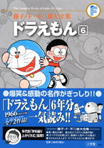

| |

定価：本体1,600円＋税
A5判／588ページ
好評発売中！
★は初めて単行本に収録される
作品です。
※収録内容は変更になる
場合があります。

|
雲ねんど（小一73年04月号）
ひらりマント（小一73年05月号）
★ゆめまくらでドッキリ（小一73年06月号）
本物クレヨン（小一73年07月号）
キャンプ（小一73年08月号）
月の光と虫の声（小一73年09月号）
ココロをのぞいちゃえ（小一73年10月号）
★ふしぎなめがね（小一73年11月号）
地下鉄を作っちゃえ（小一73年12月号）
★おとしだまぼきん（小一74年01月号）
通りぬけフープ（小一74年02月号）
ピーヒョロロープ（小一74年03月号）
コチョコチョ手ぶくろ（小二74年04月号）
通せんぼう（小二74年05月号）
らくがきじゅう（小二74年06月号）
折り紙ラジコン（小二74年07月号）
ドンブラクリーム（小二74年08月号）
台風のフー子（小二74年09月号）
正義のパトカー（小二74年10月号）
夢中機を探せ（小二74年11月号）
マッチ売りのドラえもん（小二74年12月号）
風の子バンド（小二75年01月号）
手足につけるミニ頭（小二75年02月号）
うちでの小づち（小二75年03月号）
クエーヌパン（小三75年04月号）
ないしょペン（小三75年05月号）
めんくいカメラ（小三75年06月号）
わらってくらそう（小三75年07月号）
電話のおばけ（小三75年08月号）
ごきげんメーター（小三75年09月号）
アソボウ（小三75年10月号）
動物型にげだしじょう（小三75年11月号）
ようろうおつまみ（小三75年12月号）
バランス注射（小三76年01月号）
ＸＹＺ線カメラ（小三76年02月号）
わすれ鳥（小三76年03月号） |
あらかじめアンテナ（小四76年04月号）
ミサイルが追ってくる（小四76年05月号）
悪魔のパスポート（小四76年06月号）
ドンブラ粉（小四76年07月号）
ゆうれいの干物（小四76年08月号）
風神さわぎ（小四76年09月号）
チクタクボンワッペン（小四76年10月号）
宇宙人の家？（小四76年11月号）
盗塁王をめざせ（小四76年12月号）
タマシイム・マシン（小四77年01月号）
もどりライト（小四77年02月号）
ロケットそうじゅうくんれん機（小四77年03月号）
オールマイティーパス（小五77年04月号）
地球脱出計画（小五77年05月号）
実感帽（小五77年06月号）
タッチ手ぶくろ（小五77年07月号）
ゆめのチャンネル（小五77年08月号）
実物射的で狙い撃ち（小五77年09月号）
ジークフリート（小五77年10月号）
腹ぺこのつらさ知ってるかい（小五77年11月号）
カッカホカホカ（小五77年12月号）
無事故でけがをした話（小五78年01月号）
猛獣ならし手ぶくろ（小五78年02月号）
筋肉コントローラー（小五78年03月号）
驚音波発振機（小六78年04月号）
週刊のび太（小六78年05月号）
ガールフレンドカタログ（小六78年06月号）
あべこべ惑星（小六78年07月号）
海に入らず海底を散歩する方法（小六78年08月号）
大氷山の小さな家（小六78年09月号）
雪山のロマンス（小六78年10月号）
モアよドードーよ、永遠に（小六78年11月号）
のび太の秘密トンネル（小六78年12月号）
へやいっぱいの大ドラやき（小六79年01月号）
クイズは地球をめぐる（小六79年02月号）
身がわりバー（小六79年03月号） |